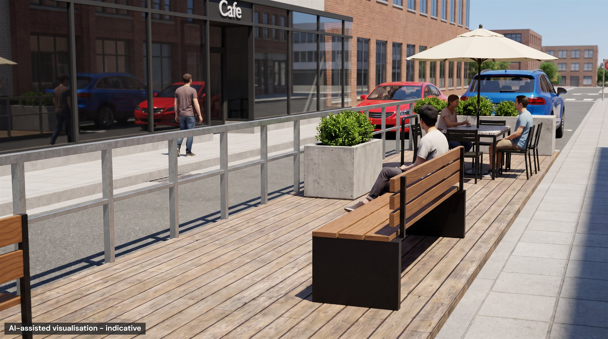
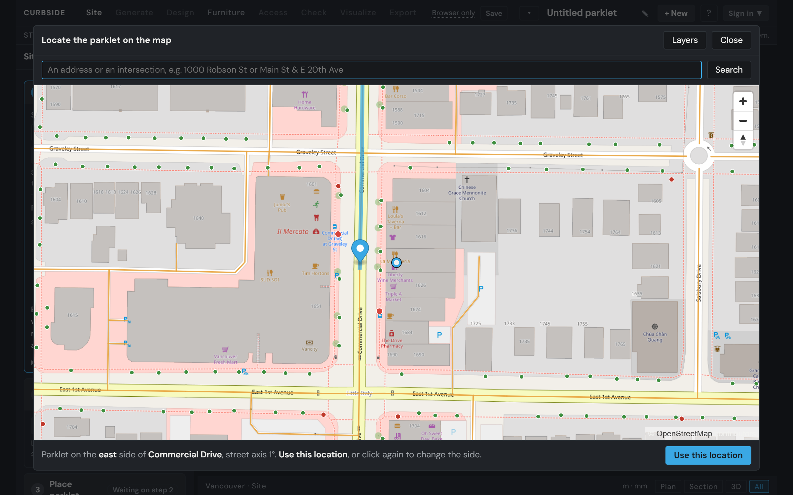
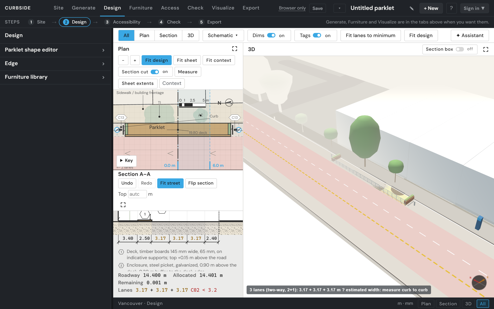
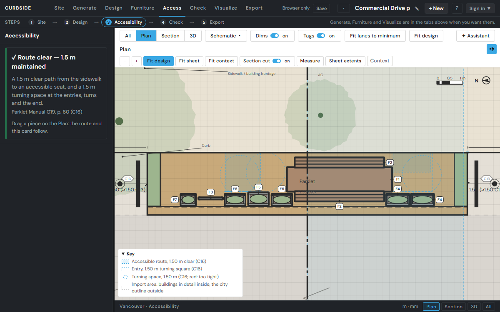
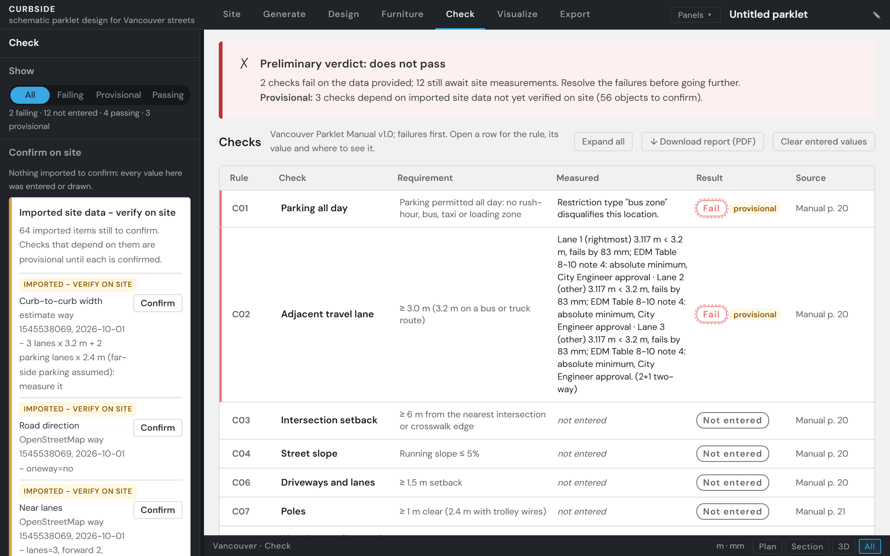
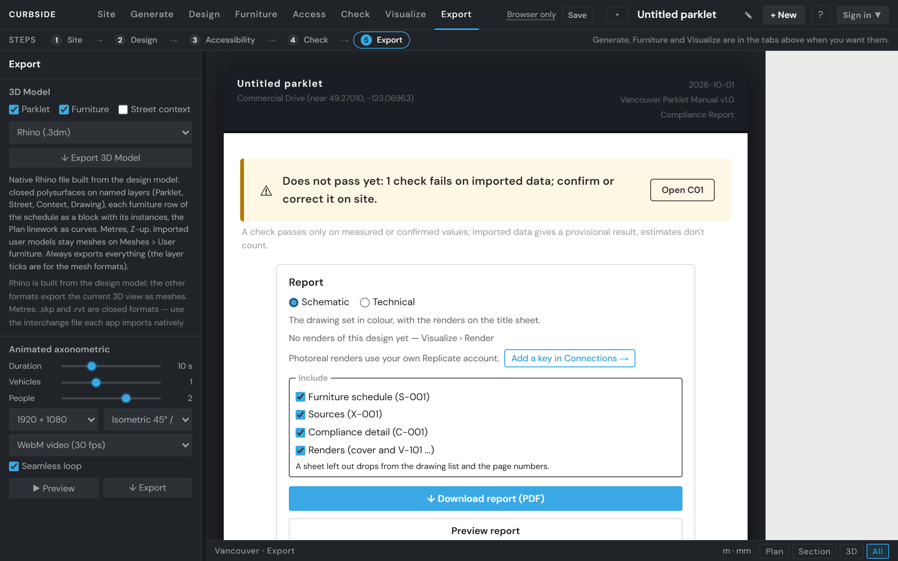
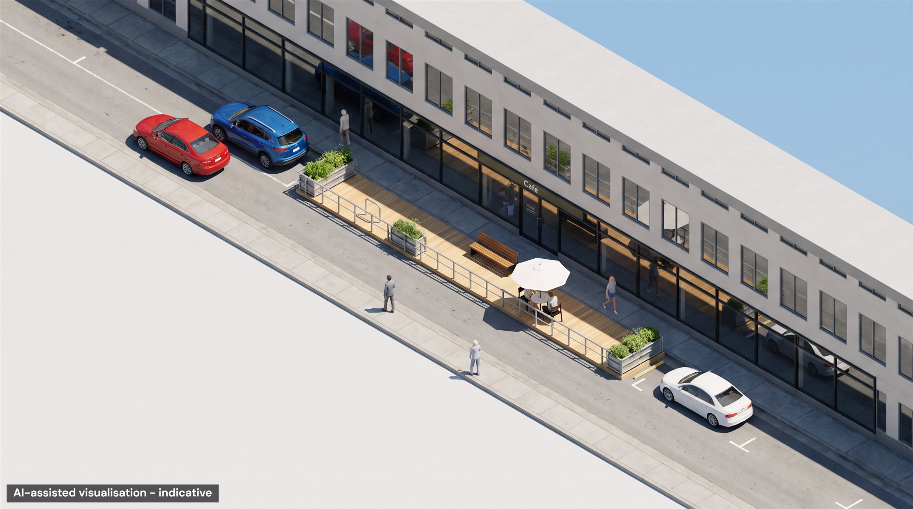
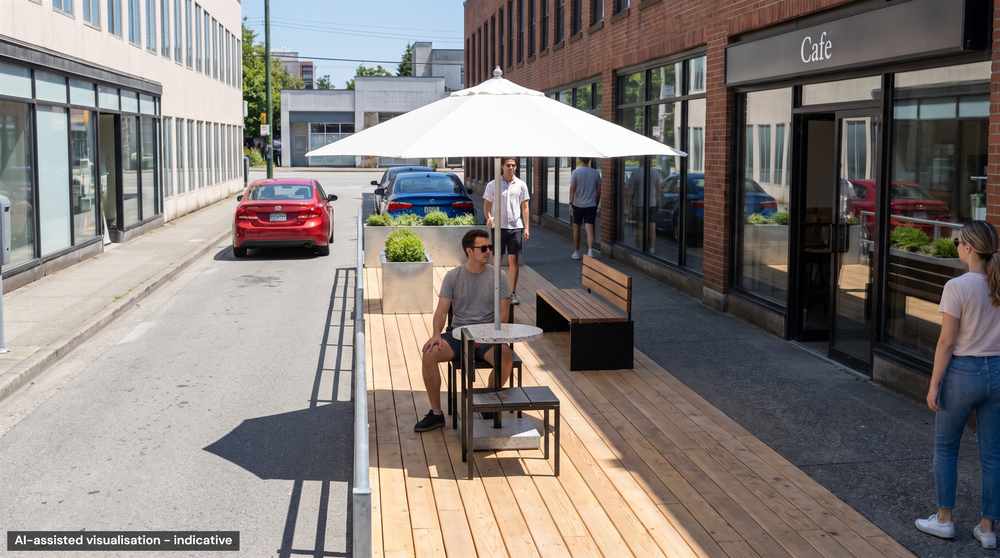
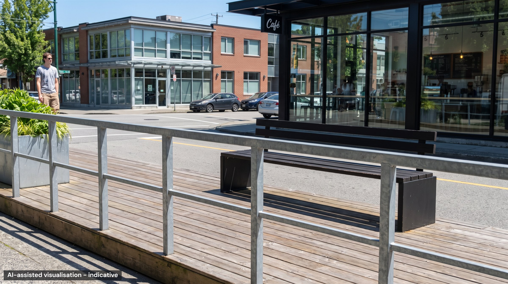

AI-assisted visualisation of the reference design · indicative
Schematic parklet design for Vancouver streets, compliant by construction.
Draw a parklet on a Vancouver street, check it live against the Parklet Manual and the Engineering Design Manual, and export a report.
What Curbside is
Curbside is a schematic design and compliance tool that helps turn an idea for a Vancouver parklet into a site-specific, reviewable proposal. Designed for anyone who might initiate a parklet, from a café owner to a designer preparing a first sketch, it builds the street from the address using City open data, OpenStreetMap and TransLink, incorporating lanes, bike routes, transit stops, hydrants, trees and buildings. Users can generate and refine furnished layouts according to their priorities, such as seating, planting or shade, while the Parklet Manual's clearance and access requirements are checked throughout. Each value is identified as measured, imported or estimated; estimates cannot satisfy compliance checks, and a survey sheet lists what must still be verified on site. From one model, Curbside produces both a schematic package for communicating the proposal and a technical package documenting compliance, assumptions and sources for pre-application review.
- Your designs, savedDesigns are kept in your account and reopen where you left them; without an account, in this browser only.
- Two drawing setsA schematic set to share the idea and a technical set for pre-application review, as one PDF each.
- Photoreal rendersStreet views of your design with your own key, AI-assisted and indicative.
How it works
Five steps, from a street address to a drawing set. Shown at Commercial Drive and East 1st Avenue.
Site

Find your street on the map and pick the side your parklet goes on; Curbside brings in the street around it.
Design

Shape the deck, choose its edge and place the furniture, or let Curbside propose layouts that already pass.
Accessibility

See the 1.5 m path from the sidewalk to a seat, and what to move when something is in the way.
Check

The Parklet Manual's checks, each with its reason; anything estimated waits until you measure it.
Export

Download the drawings as a PDF, with a survey sheet to take on your site visit.
What it can look like
The reference design behind the sample report, as the Visualize tab's photoreal renders show it.



AI-assisted visualisations, indicative. Rendered for the sample with the author's account; your own renders use the key you add.
The checks
Every design is checked against the City of Vancouver Parklet Manual's siting and design requirements.
- C01 All-day parking permitted (no rush-hour, bus, taxi, or loading zone)
- C02 Adjacent travel lane ≥ 3.0 m (3.2 m for bus/truck routes)
- C03 Minimum 6 m setback from nearest intersection / crosswalk edge
- C04 Street running slope ≤ 5%
- C05 Minimum 5 m clearance on either side of any fire hydrant
- C06 Minimum 1.5 m setback from adjacent driveways or lanes
- C07 Minimum 1 m clearance from poles (2.4 m if trolley wires attached)
- C08 Minimum 2 m clearance from traffic signal controller boxes / electrical kiosks
- C09 Minimum 1 m clearance from manhole lids, valves, grates, access chambers
- C10 Does not block Fire Dept. connections, utility connections, or fire exits
- C11 Curb and roadside drainage maintained — street drains not blocked
- C12 Minimum pedestrian clearances on boulevard / utility strip maintained
- C13 Minimum 1.5 m setback from adjacent parking spaces
- C14 Deck flush with the sidewalk (gap at most 12 mm; connector at most 13 mm)
- C15 Deck load capacity ≥ 7.2 kPa
- C16 Accessible route 1.5 m clear from an entry, 1.5 m turning space
- C17 Enclosure 0.75–1.0 m high on the traffic side and both ends
- C18 At least two unobstructed openings of 1.8 m or more to the sidewalk
- C19 Overhead elements at least 2.1 m clear above the deck and within the footprint